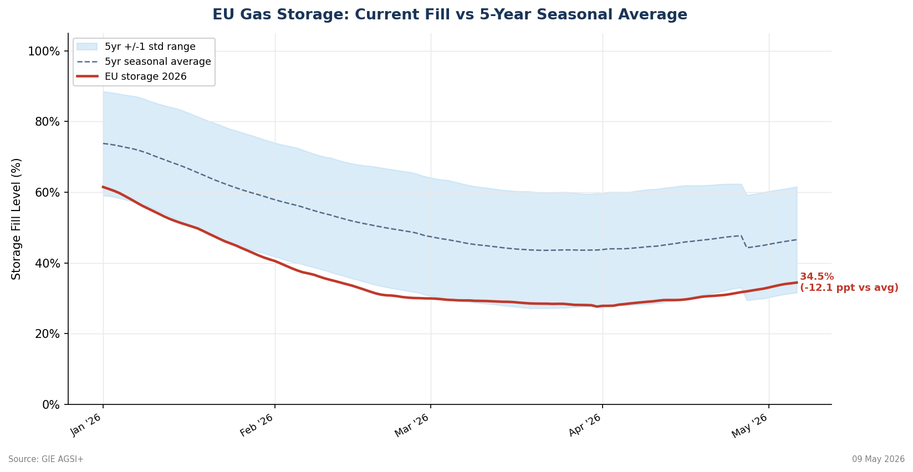
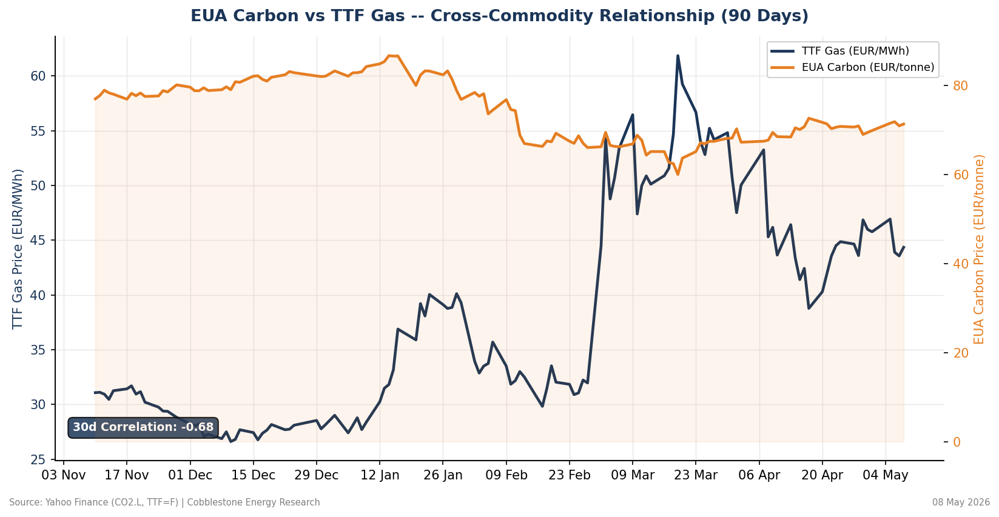
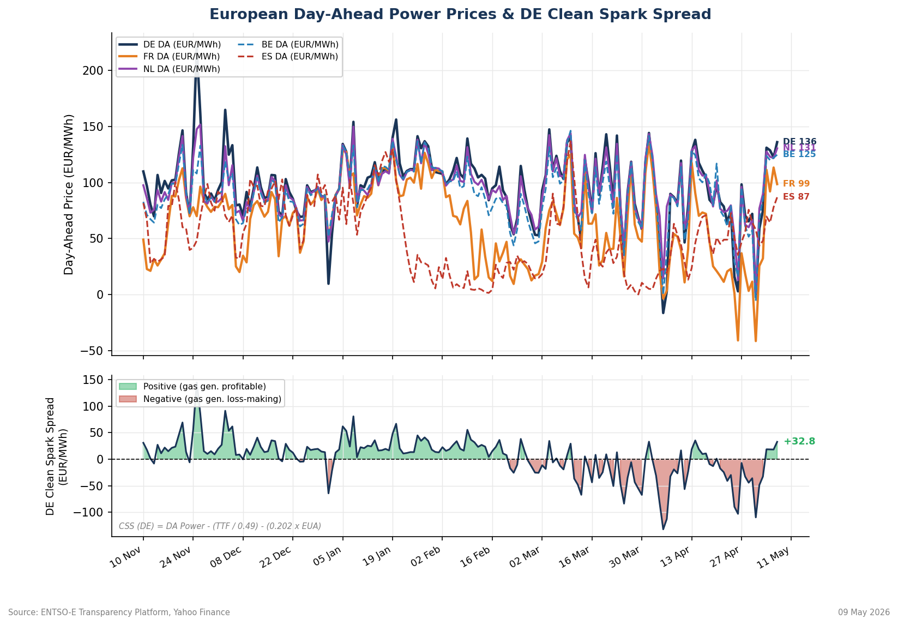

European gas storage is entering the summer injection season in its most structurally tight position in five years, running 12.3 percentage points below the seasonal average at 34.3% full. Simultaneously, EUA carbon prices have firmed +6.8% over the past 30 days, diverging sharply from TTF natural gas which has eased 12.3% over the same period (30-day correlation: –0.68). This cross-commodity divergence — falling gas costs but rising carbon costs — is directly boosting European Day-Ahead power prices, with Germany clearing at EUR 122.44/MWh and the clean spark spread sitting at a healthy +EUR 18.34/MWh, confirming gas-fired generation is profitable. The primary tail risk is a demand or supply shock re-pricing the forward gas curve sharply higher from an already tight storage base.
EU aggregate gas storage closed 6 May 2026 at 34.3% capacity, historically low for this point in the calendar year. The 5-year seasonal average for early May sits around 46.6%, placing current inventories –12.3 ppt below the seasonal norm — a deficit that classifies as ‘significantly tight’ by any standard market framework. For context, the EU typically targets 90% full by 1 November under Regulation (EU) 2022/1032, meaning approximately 870 TWh of net injection is required between now and autumn.
The injection pace compounds the concern. Daily injection is running 545 GWh/day below its 30-day average, meaning the market has not yet seen the sustained injection ramp that should characterise May. If this pace persists into June, the storage deficit will widen rather than close. Contributing factors include below-average Norwegian pipeline flows, continued LNG cargo diversions to Asian markets, and industrial demand that has partially recovered from the 2022–2023 demand destruction episode.

EU Allowances (EUAs) are trading at EUR 71.81/tonne (WisdomTree Carbon ETP, CO2.L), having appreciated +6.8% over the past 30 days. This move is occurring against a backdrop of declining TTF gas prices (–12.3% over the same window), producing a sharp cross-commodity divergence with a 30-day rolling correlation of –0.68.
This divergence is structurally significant. In the 2021–2023 energy crisis, gas and carbon moved in tight positive correlation (corr > +0.7) as both responded to the same demand/supply shock. Today’s –0.68 reading signals a regime shift: the EUA bid is being driven by distinct factors — MSR supply constraints, EU ETS reform signals, and renewed compliance buying — rather than gas fundamentals. This decoupling means power generators face rising carbon costs even as fuel costs ease, widening the fuel-switching spread in favour of gas.

European Day-Ahead electricity markets are reflecting the gas and carbon signals in real time. German baseload cleared at EUR 122.44/MWh and French Day-Ahead at EUR 113.40/MWh on the most recent session, both well above the long-run normalised range and signalling material carbon + scarcity premia embedded in the marginal clearing price.
The Clean Spark Spread (CSS) — the margin of a CCGT gas-fired generator after deducting fuel and carbon costs — stands at +EUR 18.34/MWh:
A positive CSS of +EUR 18.34/MWh confirms gas-fired generation is profitable at current prices. The DE Power-Gas spread of EUR 78.54/MWh represents the premium above pure fuel cost, attributable to carbon costs, capacity scarcity, and structural baseload underprovision (French nuclear maintenance, lower hydro).

All 12 daily monitor metrics computed by the automated pipeline for 07 May 2026:
| # | Metric | Value | Signal | Trading Relevance |
|---|---|---|---|---|
| 1 | EU Gas Storage | 34.3% full | BELOW AVG | Primary tightness signal; below 35% in May is historically low |
| 2 | vs 5yr Seasonal Avg | –12.3 ppt | TIGHT | Structural deficit; –10+ ppt = significantly below norm, bullish |
| 3 | Injection vs 30d Avg | –545 GWh/day | BELOW AVG | Lagging build pace compounds winter supply risk |
| 4 | TTF M+1 | EUR 43.90/MWh | EASING | European gas benchmark; direct fuel cost to gas-fired generation |
| 5 | TTF 30d Momentum | –12.3% | BEARISH | Downward trend in gas cost; supportive for CSS margin |
| 6 | EUA Carbon | EUR 71.81/t | RISING | Raises coal marginal cost; drives gas-for-coal switching demand |
| 7 | EUA 30d Momentum | +6.8% | BULLISH | Carbon firming vs gas easing = divergence regime; key signal |
| 8 | Gas–Carbon 30d Corr | –0.68 | STRONG | Negative correlation = structural decoupling; regime shift indicator |
| 9 | DE Day-Ahead Power | EUR 122.44/MWh | HIGH | Real-time gas+carbon cost pass-through to power clearing price |
| 10 | FR Day-Ahead Power | EUR 113.40/MWh | HIGH | Nuclear/hydro mix shifts DE–FR spread; cross-border arb signal |
| 11 | Clean Spark Spread | +EUR 18.34/MWh | POSITIVE | Gas generation profitable; CSS > 0 signals open gas plant economics |
| 12 | DE Power–Gas Spread | EUR 78.54/MWh | — | Carbon + scarcity premium over pure fuel cost; high = tight market |
Norwegian outage extension: Norwegian pipeline system carries ~100 TWh/month to Northwest Europe. Any unplanned maintenance beyond current scheduled outages would immediately tighten the prompt TTF balance, potentially adding EUR 3–8/MWh to M+1.
LNG cargo diversion to Asia: Asian spot LNG premiums (JKM spread to TTF) remain elevated. A sustained premium above USD 1.50/MMBtu incentivises cargo diversions, reducing European regasification inflows and exacerbating the injection shortfall.
EU ETS MSR absorption: The Market Stability Reserve is absorbing a higher-than-expected volume of allowances in 2026, structurally tightening near-term EUA supply. Any policy signal on MSR parameters would be a sharp mover in carbon prices.
Industrial demand rebound: European industrial gas demand destroyed in 2022–2023 has partially recovered. A further recovery — particularly in fertiliser, chemicals, and steel — would accelerate storage draws and reduce injection headroom.
CSS inversion risk: A rapid TTF rally without a corresponding power price move could flip the clean spark spread negative, destroying gas plant economics and potentially triggering curtailment — a self-reinforcing mechanism.